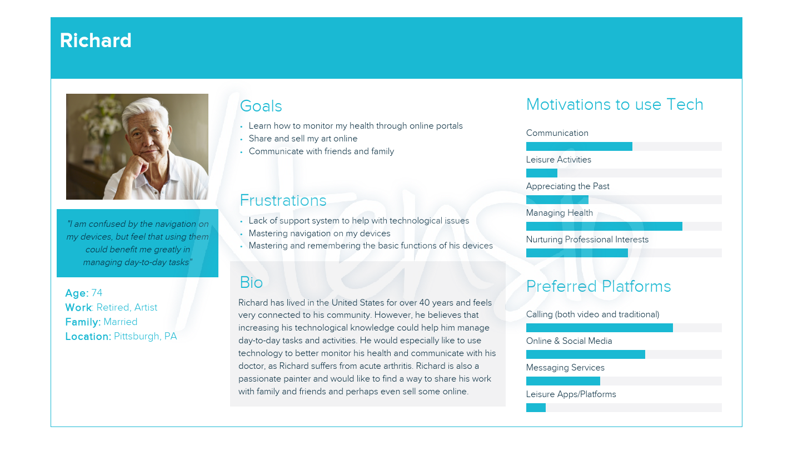
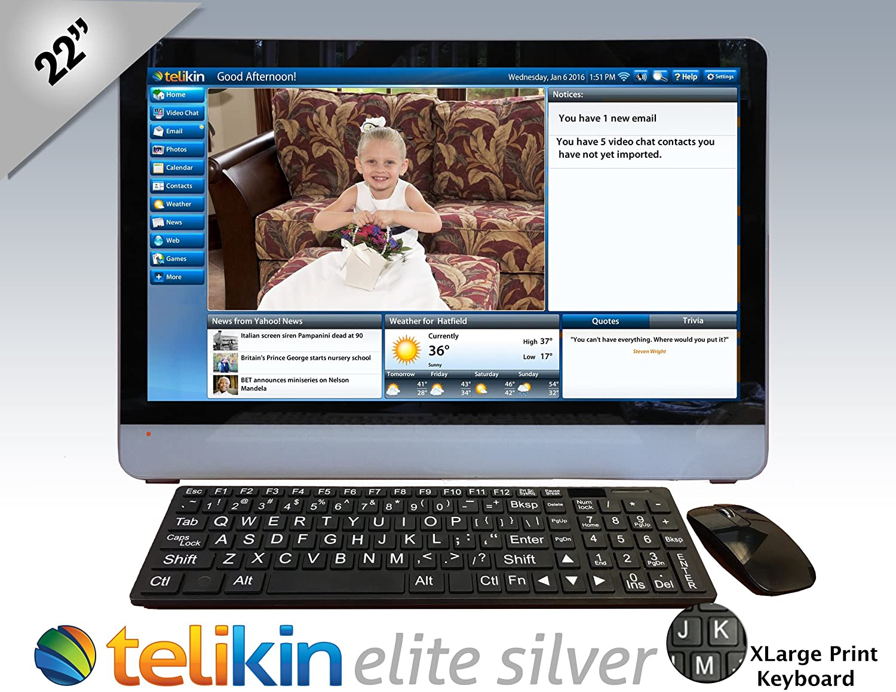
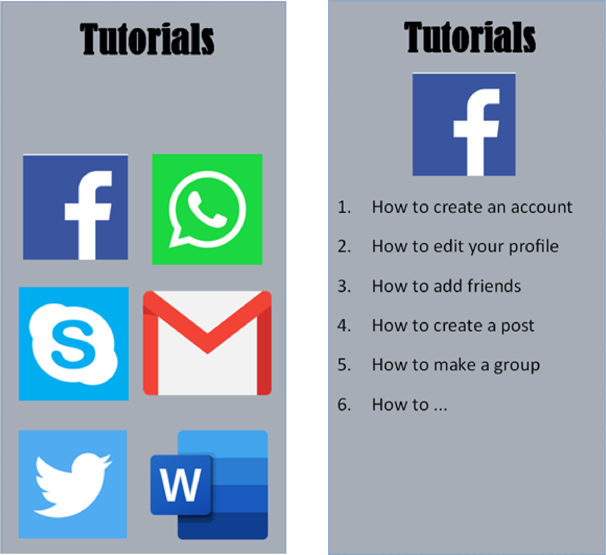

An app that aims to help immigrant seniors feel confident using their devices and gain a sense of independence in technological landscapes.
INFORMATION
DURATION: May 2020 - July 2020
LOCATION: Georgia Tech, Atlanta, GA
MEMBERS: Anjana Anandkumar • Parth Shah
ROLE: UX Designer • UX Researcher
This space is intentionally left blank.
PROBLEM SPACE
Immigration can be a stressful experience for seniors. They often have to cope with isolation, language constraints, and income stress. Thus, senior immigrants often turn to technology to adapt to their new society and maintain contact with their community from home. However, there are many barriers that can prevent seniors from using technology, which can have harmful consequences on their well-being.
Target Audience: immigrant seniors (aged 65+)
Personas

This space is intentionally left blank.
PRELIMINARY RESEARCH
TECHNOLOGY REVIEW
There are many different technologies that aim to address this problem area. As part of our preliminary research, we analyzed a number of existing solutions in terms of their strengths and weaknesses. Presented is a sample of those reviews:

Telikin: a brand of computers that are designed primarily for senior citizens
pros
• easy-to-use interface including touchscreen and large print keyboard
• simplified software for email, video
chatting, and web browsing
cons
• manuals all written in English
• very expensive
This space is intentionally left blank.
Skillful Senior: a website that introduces basic concepts of using a computer to seniors
pros
• easy to navigate
• covers important basics such as how to use the mouse, how to type, and even how to sit properly
cons
• lacks meaningful content
• must speak English to use
This space is intentionally left blank.
Techboomers: a website geared towards helping seniors learn how to use specific software
cons
• cluttered interface
• confusing navigation
• must speak English to use
• assumes a certain amount of preexisting knowledge
This space is intentionally left blank.
This space is intentionally left blank.
GATHERING DATA
After determining our problem space and target audience, our next step was to gather data regarding our demographic’s attitudes and opinions towards using technology in their daily lives. Each group member selected an individual to interview for a total of three interviews. Using a prewritten script, we asked open-ended questions allowing the user to give free responses that provided varied and detailed information. All interviews were recorded and transcribed for data analysis
Research Goals
1. We want to understand how seniors interact with technology in their everyday lives.
2. We want to know what points of confusion seniors face when interacting with technology.
3. We want to understand factors that prevent seniors from learning technology.
DATA ANALYSIS
After collecting and reviewing all of the data from our interviews, we analyzed the data using affinity diagramming. Our first step was to generate an “idea dump” in a rapid-fire brainstorming session. Team members pulled from notes they had independently generated before the exercise as well as new connections or ideas they found during the group brainstorming. We then organized our notes into categories.
Key Insights
1. Tablets are often the device of choice among the senior population.
2. Seniors often depend on family and friends to initially teach them about technology.
3. Seniors also rely on Google to answer specific questions once they have passed the learning curve.
4. Seniors mainly use technology for social purposes, leisure, and managing health.
5. Social activities seem to be the most common tasks.
6. Often times, seniors do not see the benefit of learning many new technologies or features.
7. While immigrant seniors generally acknowledge that technology enables communication with friends and family abroad, many tend to find the use of technology an overall isolating experience.
This space is intentionally left blank.
DESIGN
DESIGN ALTERNATIVES
Online Lessons
One of our proposed design solutions for the previously described problem area would be an online classroom format. Here, senior ‘students’ could browse or search problem areas and view guided tutorials/lessons from pre-taped videos with virtual teachers.
Insights Addressed
1. Could be accessed from tablets.
2. Has a search bar, similar to a Google search.
3. Lessons would cover topics that seniors find interesting, from socializing to leisure to managing health.
4. Lessons are categorized so seniors can skip over topics where they do not see the benefit.
This space is intentionally left blank.

Tutorial App
The app can guide seniors on how to use popular apps and technologies. It will have step -by-step instructions on how to accomplish certain tasks, such as adding friends on Facebook or making a call on WhatsApp, both in text and video format. You can even search for solutions to specific issues, and the appropriate guide will be provided.
Insights Addressed
1. Could be accessed from tablets.
2. Has a search bar, similar to a Google search.
3. Lessons would cover topics that seniors find interesting, primarily in terms of social activities.
4. Lessons are categorized so seniors can skip over topics where they do not see the benefit.
This space is intentionally left blank.
DESIGN SOLUTION
Screen Sharing
This is an app that allows for someone to take control of a senior’s screen to demonstrate how to use a certain technology or feature. It was designed to give seniors the ability to grant access to their relatives or friends. The app also has a live tech support if family or friends are not available.
We decided to pursue this design over the others as we felt it best addressed the expressed needs and desires of our demographic.
Insights Addressed
1. Could be accessed from tablets.
2. Seniors can receive help from family and friends.
3. Help could be given for only those areas that seniors would find beneficial, including for social, leisurely, and health-related purposes.
4. The sharing of a screen would make the technological help process social rather than isolating.
This space is intentionally left blank.
EVALUATIONS
THINK ALOUD WALKTHROUGH
We used the think aloud protocol to conduct usability tests on our initial prototype. We recruited participants both in our core demographic, immigrant seniors aged 65+, and secondary users who might use this app. These secondary users consisted of those who might use this app to help a family member or friend with technological issues.
Research Goals
1. Determine the intuitiveness of the initial design.
2. Locate the users' points of confusion.
3. Compile a list of suggested features.
3. Determine the app's perceived usefulness by users.
Our interviews were conducted via Zoom calls and recorded for review. The interviewer used screen sharing to show the prototype screens to the interviewee, who was in turn asked to talk aloud as they went through the steps of a prewritten procedure script that we had prepared. The interviewer script/procedure plan is outlined here:
Procedure Plan
1. Ask the participant to complete a scenario (i.e. “Demonstrate how you would use the this app to share your screen with a friend.”).
2. Ask the user to do a screen-by-screen evaluation, expressing any thoughts that arise regarding purpose; expected functionality; or general likes, dislikes, or areas of confusion.
3. Determine the user’s perceived usefulness of the app.
3. Record any suggestions for add-ons or improvements.
Key Insights
Issue 1: The UI needs to focus on simplicity rather than feature overload.
Solution: Focus design around only those features which are most necessary.
Issue 2: Elderly users would like to use this app to gain technological independence rather than soley rely on help.
Solution: Include a recording option so that users can review old sessions.
Issue 3: Some users may have privacy concerns regarding relinquishing control of their devices to another.
Solution: Include a chat-only option so that users do not have to give full control of their device.
Issue 4: Users find the contacts page confusing.
Solution: Adjust the contacts page to include contact options from your phonebook and other apps.
FINAL DESIGN
This final design addresses all of the key insights from our evaluations. We have fleshed out the design while keeping a focus on basic features, added in a recording and video library option, created a voice-only help session choice, and updated the contact page to pull from existing contact lists. We place a focus on WhatsApp here as this tends to be a top messaging service for immigrant seniors specifically.
Our next step in this process would be to conduct further usability tests and continue to revise this app. We would continue the process of iteration we followed to reach this final solution.